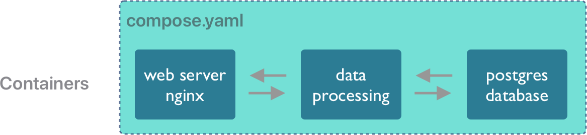
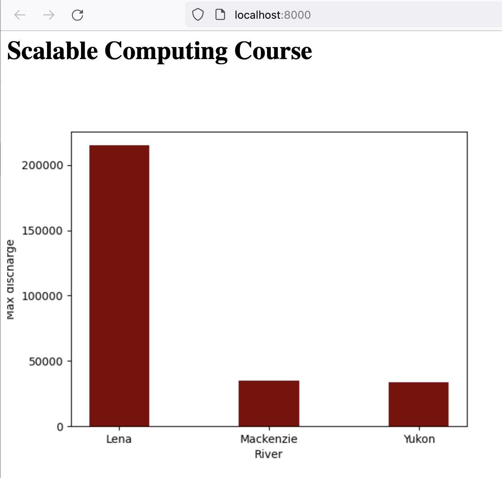
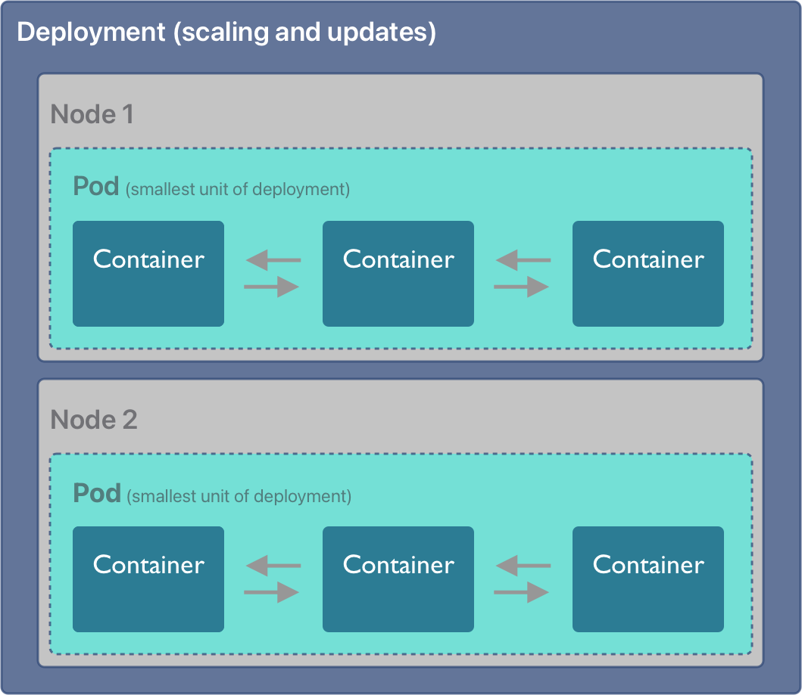
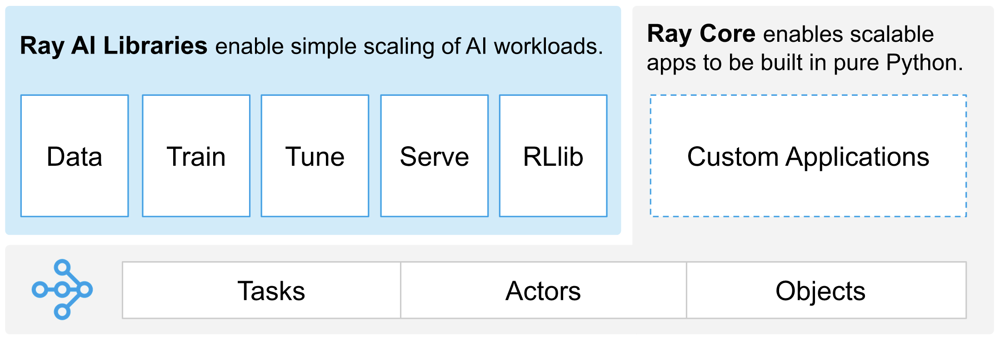
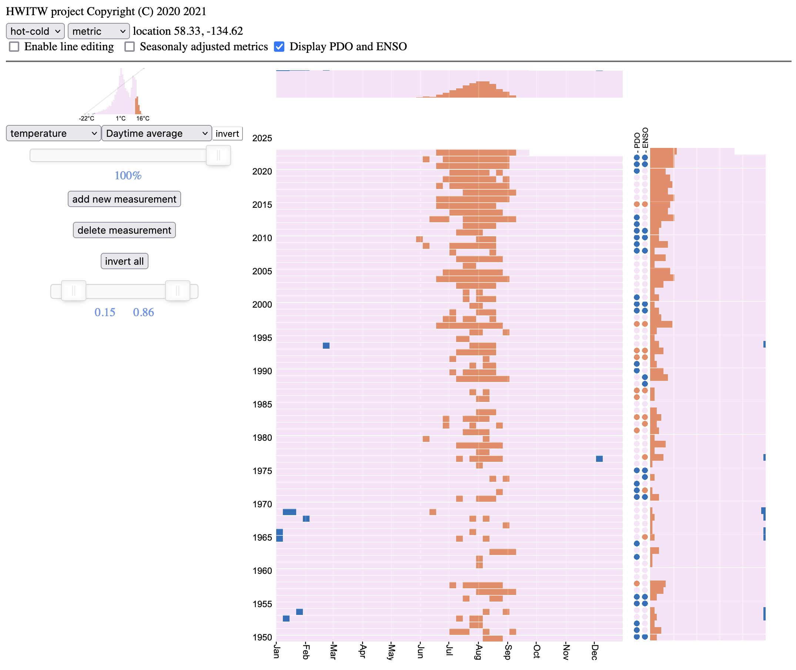
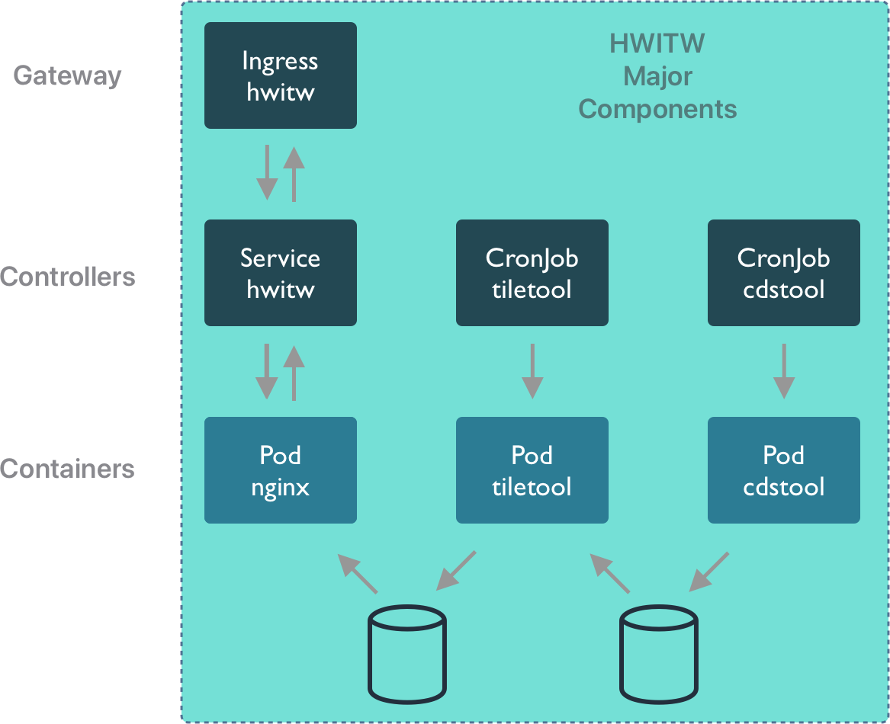

17 Container orchestration
17.1 Learning Objectives
- Discuss containers in high performace computing and cloud computing
- Explore orchestration approaches
- Learn how to use docker compose to build a workflow
- Explore a real world Kubernetes service
17.2 Container orchestration systems
Container orchestration is the process of linking multiple containers into an integrated application. These applications can represent a computational workflow, a backend service or data store, a frontend application, or some combination of these and others. For example, a simple application might consist of a backend database system in a container, which is accessed by containerized data processing code, and which is served by a containerized web application.

All of these types of integrated systems can be built by orchestrating the deployment of multiple containers, whether creating scientific applications for running big data jobs on high performance computers or building and deploying scientific web applications and services.
Let’s explore a few container orchestration systems.
17.2.1 docker compose
Docker Compose is “a tool for defining and running multi-container applications”. This is the essence of orchestration. With just the compose application, you can link multiple containers into an integrated application to run it on demand. This is particularly useful to quickly bring up a backend and frontend application, say one that uses a database (like postgresql) or a caching server (like redis) and combine it with a web-based frontend.
Creating a docker compose application is done by editing a compose.yaml configuration document that describes each of the containers to be run in the system, and how they are linked together. In the simplest “Hello world” case, you simply create the service you want to run by identifying the image to be executed. For example, given this compose.yaml, file:
services:
hello_world:
image: hello-worldRun it with docker-compose up, and it produces the familiar hello world output.
$ docker-compose up
[+] Running 2/0
✔ Network 15-containers_default Created 0.0s
✔ Container 15-containers-hello_world-1 Created 0.0s
Attaching to hello_world-1
hello_world-1 |
hello_world-1 | Hello from Docker!
hello_world-1 | This message shows that your installation appears to be working correctly.
hello_world-1 |
hello_world-1 | To generate this message, Docker took the following steps:
hello_world-1 | 1. The Docker client contacted the Docker daemon.
hello_world-1 | 2. The Docker daemon pulled the "hello-world" image from the Docker Hub.
hello_world-1 | (arm64v8)
hello_world-1 | 3. The Docker daemon created a new container from that image which runs the
hello_world-1 | executable that produces the output you are currently reading.
hello_world-1 | 4. The Docker daemon streamed that output to the Docker client, which sent it
hello_world-1 | to your terminal.
hello_world-1 |
hello_world-1 | To try something more ambitious, you can run an Ubuntu container with:
hello_world-1 | $ docker run -it ubuntu bash
hello_world-1 |
hello_world-1 | Share images, automate workflows, and more with a free Docker ID:
hello_world-1 | https://hub.docker.com/
hello_world-1 |
hello_world-1 | For more examples and ideas, visit:
hello_world-1 | https://docs.docker.com/get-started/
hello_world-1 |
hello_world-1 exited with code 0The big difference is that you can add multiple services that run containers in a compose file, and they will be launched and can communicate with one another. compose also handles some housekeeping for you, in that it cleans up containers when the application shuts down.
Let’s build a simple web application with docker compose. First, create a directory to hold our website files, and initialize it with a simple web page.
$ mkdir -p ~/adc-course/web
$ echo '<h1>Scalable Computing Course</h1>' > ~/adc-course/web/index.htmlNext, create the compose.yaml, and use the stock nginx image from DockerHub to serve the file. We’ll throw the hello-world container in as well just to show two services can be run from the same application:
services:
web:
image: nginx
ports:
- 8000:80
volumes:
- ~/adc-course/web:/usr/share/nginx/html
hello_world:
image: hello-worldFinally, run it with docker-compose up --detach:
$ docker-compose up --detach
[+] Running 8/8
✔ web 7 layers [⣿⣿⣿⣿⣿⣿⣿] 0B/0B Pulled 304.3s
✔ 59f5764b1f6d Pull complete 251.0s
✔ f7bd43626fa7 Pull complete 288.1s
✔ 2df415630b2f Pull complete 5.3s
✔ 059f9f6918db Pull complete 10.5s
✔ df91ff398a83 Pull complete 15.9s
✔ e75b854d63f1 Pull complete 21.4s
✔ 4b88df8a13cd Pull complete 26.5s
[+] Running 2/2
✔ Container 15-containers-web-1 Started 0.1s
✔ Container 15-containers-hello_world-1 Started 0.0sYour website should now be live on your local machine at https://localhost:8000. And while it is running, you can now see the executing containers on your host. Port 8000 on the local host is mapped to port 80 in the nginx container.
$ docker ps
CONTAINER ID IMAGE COMMAND CREATED STATUS PORTS NAMES
5d634a37ba09 nginx "/docker-entrypoint.…" 5 seconds ago Up 5 seconds 0.0.0.0:8000->80/tcp, :::8000->80/tcp 15-containers-web-1Note that only the nginx container is running. The hello-world container started up, printed its content, and immediately exited. Whereas the nginx image was designed to run the web server continuously until told to shut down. You can shut down the containers with docker-compose down:
$ docker-compose down
[+] Running 3/3
✔ Container 15-containers-web-1 Removed 0.5s
✔ Container 15-containers-hello_world-1 Removed 0.0s
✔ Network 15-containers_default Removed 0.1sUsing the adccourse:1.0 image that we created earlier, write a docker-compose application that:
- runs the
max-discharge.pyscript to generate themax-discharge.pngimage showing discharge data - copies the png file to the
webdirectory that you just set up - modifies the
index.htmlfile to display the plot on the web page - starts up your web application with
docker-compose up --detach
Hint: You will likely want to use the depends_on keyword and the command keyword in your compose.yaml service description to modify the command that is run by the adccourse:1.0 container.
First, modify our base index.html to display the dynamically generated image:
echo '<img src="max-discharge.png">' >> ~/adc-course/web/index.htmlSecond, add adccourse to the compose.yaml, and change the command to also copy the produced png file into the web directory.
services:
web:
image: nginx
ports:
- 8000:80
volumes:
- ~/adc-course/web:/usr/share/nginx/html
depends_on:
- adccourse
adccourse:
image: adccourse:1.0
volumes:
- ~/adc-course:/var/data
command: [ "bash", "-i", "-c", "workon scomp && python /var/data/scripts/max-discharge.py && cp /var/data/output/max-discharge.png /var/data/web/max-discharge.png" ]Note how we used depends_on to ensure the adccourse service produces the png file before the nginx service is started. Our web page now inlcudes the dynamically generated plot:

17.2.2 Kubernetes
Kubernetes is fundamentally an orchestration system for executing containerized applications on the nodes of distributed computing clusters. Kubernetes creates fault tolerance, high availability, and scalability for applications deployed on a cluster.

It does so by creating a high availability control plane that manages all aspects of the definition, creation, and execution of containers on nodes of the cluster. Thus, if a container running on one node of a cluster fails, or loses network connectivity, the Kubernetes control plane brings the container back up on another node in the cluster.
While the core concepts in Kubernetes are extensive and have been reviewed in some more comprehensive tutorials, a quick overview of the core concepts will show the parallels between Kubernetes and Docker Compose.

Similarly to compose, Kubernetes executes application containers based on OCI images, but these are bundled into Pods. A Pod in Kubernetes is the smallest unit of a workload that can be deployed on a node, and it consists of one or more containers that will be executed within the Pod. Containers within a Pod are tichtly linked and share network and other resources, making it easy for them to coordinate. Pods are deployed onto one or more Nodes in a Kubernetes cluster, where a Node corresponds to a physical or virtual server that is managed by Kubernetes. The Kubernetes control plane includes a scheduler that determines how to schedule the execution of Pods onto Nodes within a deployment, how to ensure that unhealthy Pods get terminated and restarted on other Nodes, and when the number of Pods needs to be increased or decreased to scale an application.
Like other container systems, Kubernetes is configured through a set of YAML configuration files. While that is too complex for this bried introduction we can show how Kubernetes can be used by other orchestration frameworks.
17.2.3 Parsl on Kubernetes
Parsl provides a simple mechanism to decorate python functions to be executed concurrently on a variety of platforms and under different execution models, inlcuding the ThreadPoolExecutor and the HighThroughputExecutor, which we used previously.
Remember the basic layout of a parsl app, in which the @python_app decorator is used to wrap task functions that should be executed by parsl.
# Define the square task.
import parsl
@python_app
def square(x):
return x * xThis works because parsl is configured ahead of time to use a particular type of execution environment on the nodes of a cluster. The HighThroughPutExector that we used previously with a LocalProvider can instead be easily configured to work using a KubernetesProvider. Here’s a modification to our previous Config to use Kubernetes:
activate_env = 'workon scomp'
htex_kube = Config(
executors=[
HighThroughputExecutor(
label='kube-htex',
cores_per_worker=cores_per_worker,
max_workers=5,
worker_logdir_root='/',
# Address for the pod worker to connect back
address=address_by_route(),
provider=KubernetesProvider(
# Namespace in K8S to use for the run
namespace='adccourse',
# Docker image url to use for pods
image='ghcr.io/mbjones/k8sparsl:0.3',
# Command to be run upon pod start
worker_init=activate_env,
# Should follow the Kubernetes naming rules
pod_name='parsl-worker',
nodes_per_block=1,
init_blocks=1,
min_blocks=1,
# Maximum number of pods to scale up
max_blocks=1,
# persistent_volumes (list[(str, str)]) – List of tuples
# describing persistent volumes to be mounted in the pod.
# The tuples consist of (PVC Name, Mount Directory).
# persistent_volumes=[('mypvc','/var/data')]
),
),
]
)With that change, Parsl will send tasks to Kubernetes worker pods. Otherwise, the remaining parsl code is the smae as previously.
17.2.4 Ray.io
# Define the square task.
@ray.remote
def square(x):
return x * x
# Launch four parallel square tasks.
futures = [square.remote(i) for i in range(4)]
# Retrieve results.
print(ray.get(futures))
# -> [0, 1, 4, 9]The execution model also returns a Future-like object that can be queried to get the function results when it is complete.
Ray Core defines Tasks, Actors, and Objects, all of which can be used on ditributed clusters such as Kubernetes. And like Parsl, Ray can be configured to use a wide variety of execution backends such as Kubernetes. Ray also provides a mature framework for training, tuning, and serving machine learning models and the associated data.

17.2.5 Kubeflow
Kubeflow is yet another orchestration package designed to asynchronously execute tasks from containers, but Kubeflow is specific to Kubernetes clusters.
Here’s the syntax for defining a Kubeflow component and pipeline to be executed on worker pods of a Kubernetes cluster. The similarities with the previous packages are striking. But unlike Parsl and Ray, a workflow built in Kubeflow can’t be run on the rich variety of high performace computing clusters supported by the other libraries.
# Kubeflow pipeline example
from kfp import dsl
@dsl.component
def say_hello(name: str) -> str:
hello_text = f'Hello, {name}!'
print(hello_text)
return hello_text
@dsl.pipeline
def hello_pipeline(recipient: str) -> str:
hello_task = say_hello(name=recipient)
return hello_task.output17.3 How weird is the weather?
Big data are hard to visualize, and sometimes we need to come up with clever ways to pack a lot of data into a small space. This is exactly what the How weird is the weather? project did (hwitw github), by summarizing the ERA5 climate reanalysis data and providing a means to visualize over 70 years of climate data interactively. This project, developed by Brentwood Higman, John McInnes, and Katmai McKittrick, shows where climate extremes have occurred over the ERA5 dataset. First, pick any location on the globe via the work-in-progress sandcastle demo:
Next, configure the application to show the climate variables of interest. Here, I show the extremes of the average daily temperature where I live in Juneau, AK. The cold temperatures from the 1950s and 1960s haven’t been seen in decades, and now the hottest temperatures are constant throughout the summer.

17.3.1 Kubernetes deployment
Let’s examine the Kubernetes deployment. There are three major working in concert. Two CronJobs are configured, one to download data from Copernicus, and the other to transform that data into weekly summaries in a compact HDF format.

Each of these CronJobs spawns a series of Pods that run the containers with the cdstool and tiletool processes. Once the data has been output by tiletool, it can be accessed on the web. Web client sessions are handled by the Ingress, and dispatched to the HWITW Service, which in turn is implemented by a Pod running the nginx web server with the hwitw frontend HTML and Javascript code.
We can inspect these components more carefully in Kubernetes using the kubectl commandline utility.
$ kubectl get services
NAME TYPE CLUSTER-IP EXTERNAL-IP PORT(S) AGE
service/hwitw ClusterIP 10.109.0.227 <none> 5000/TCP 407dThat service is deployed in a pod running the hwitw container as a web service. In the pod listing below, you can also see that there are pods that have completed running for periodic cronjobs for cdstool, which downloads data from the Copernicus Data Service, and tiletool, which processes that data into weekly summaries and reorganizes it by time region in a large HDF5 file.
$ kubectl get pods
NAME READY STATUS RESTARTS AGE
pod/hwitw-67ccd577-rltrp 1/1 Running 0 160d
pod/hwitw-cdstool-28478538--1-99m2n 0/1 Completed 0 34d
pod/hwitw-cdstool-28508778--1-l5twt 0/1 Completed 0 13d
pod/hwitw-cdstool-28518858--1-xzpkn 0/1 Completed 0 6d10h
pod/hwitw-tiletool-28478543--1-28d2n 0/1 Completed 0 34d
pod/hwitw-tiletool-28508783--1-ldzdm 0/1 Completed 0 13d
pod/hwitw-tiletool-28518863--1-js8mj 0/1 Completed 0 6d10hThe CronJobs show the details of the schedule for these episodic processes, and the container implementation that was used for each run.
$ kubectl get cronjobs
NAME SCHEDULE SUSPEND ACTIVE LAST SCHEDULE AGE
cronjob.batch/hwitw-cdstool 18 18 * * 5 False 0 6d10h 170d
cronjob.batch/hwitw-tiletool 23 18 * * 5 False 0 6d10h 170d
$ kubectl get jobs -o wide
NAME COMPLETIONS DURATION AGE CONTAINERS IMAGES
hwitw-cdstool-28478538 1/1 13s 34d hwitw-cdstool-job ghcr.io/nceas/hwitw:0.9.6
hwitw-cdstool-28508778 1/1 9s 13d hwitw-cdstool-job ghcr.io/nceas/hwitw:0.9.6
hwitw-cdstool-28518858 1/1 10s 6d11h hwitw-cdstool-job ghcr.io/nceas/hwitw:0.9.6
hwitw-tiletool-28478543 1/1 13s 34d hwitw-cdstool-job ghcr.io/nceas/hwitw:0.9.6
hwitw-tiletool-28508783 1/1 11s 13d hwitw-cdstool-job ghcr.io/nceas/hwitw:0.9.6
hwitw-tiletool-28518863 1/1 6s 6d10h hwitw-cdstool-job ghcr.io/nceas/hwitw:0.9.6Together, these Kubernetes resources, and a few others including an Ingress Controller to glue the application together, constitue a complete data access, data processing, and web visualization service for scientific data. The entire application can be deployed with a single command.